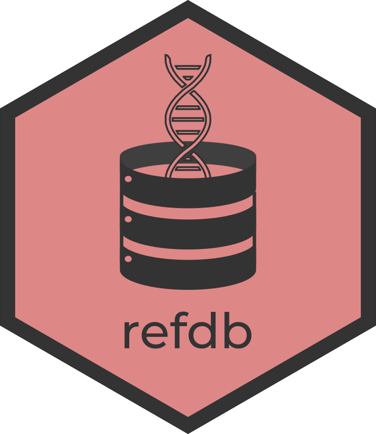

The refdb package is a reference database manager offering a set of powerful functions to import, organize, clean, filter, audit and export reference genetic data. It has been designed as an environment for semi-automatic and assisted construction of reference databases and to improve standardization and repeatability in metabarcoding studies.
Installation
You can install the development version of refdb from GitHub.
remotes::install_github("fkeck/refdb")Find more about the package (manual, vignettes, etc.): https://fkeck.github.io/refdb/
Citation
If you use the refdb package in your work, please cite:
Keck, F., & Altermatt, F. (2023). Management of DNA reference libraries for barcoding and metabarcoding studies with the R package refdb. Molecular Ecology Resources, 23(2), 511-518. https://doi.org/10.1111/1755-0998.13723.